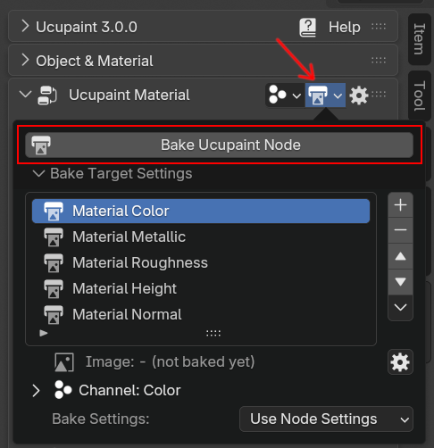
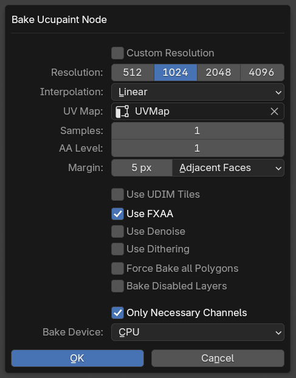
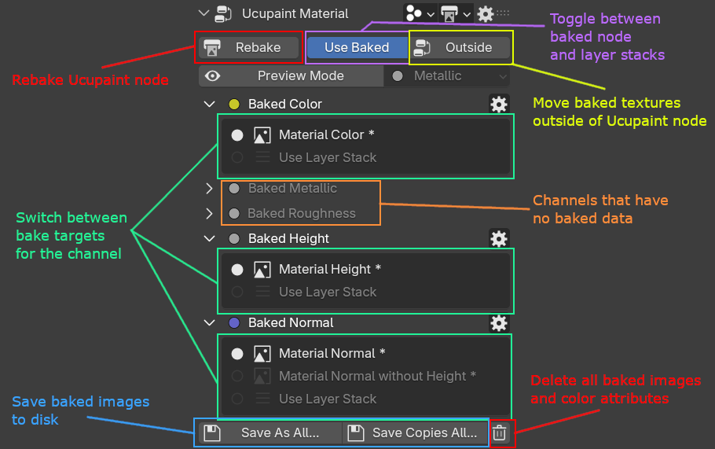
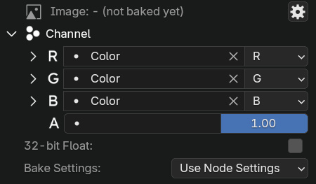
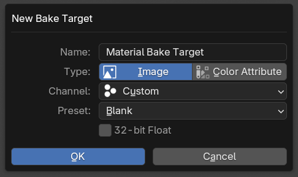

Baking Ucupaint Node¶
Ucupaint node can be baked into images or color attributes, it's very useful if you want to export for another software. To bake ucupaint node, you can click on bake target popover button and click Bake Ucupaint Node.
 |
|---|
Bake Ucupaint Node button |
Press Bake Ucupaint Node will show up the bake settings of the node
 |
|---|
Bake Ucupaint Node dialog box |
The dialog box options for Bake Ucupaint Node will be applied to all bake targets that use the node settings. It can be individually set to custom settings if needed in the bake target settings. The settings for baking ucupaint node are:
- Resolution: Resolution of the baked image.
- Interpolation: Pixel filtering interpolation of the baked image. The default is linear, but use
Closestfor pixel art - Samples: Sample for the baked image, the default is using one sample, it's generally fine, but try to increase it if the bake result has jagged lines or noises.
- AA Level: Supersample anti-aliasing level, you can only choose between 1 or 2. One is not using supersample anti-aliasing, and two (2) will quadruple the bake image size, and it will automatically resize back to the selected resolution, this can give good anti-aliasing in some cases, but very heavy on memory as it can cause crash if you run out of memory.
- Margin: Number of color pixels spread along the edge of UV islands to hide the UV seams, please increase it if the seam of your model looks visible in the far distance.
- Use UDIM Tiles: Use UDIM for the baked image. This will be enabled automatically if there are UV islands outside the 0.0-1.0 range (can be disabled in addon preferences)
- Use FXAA: Use FXAA antialiasing method as an alternative to the supersample one, it's very lightweight but can add slight blur in some texture details.
- Use Denoise: Use Blender denoising on the bake result, it can reduce noise if you use a realtime AO layer/mask
- Use Dithering: Use Blender dithering on the bake result, it can reduce banding if you use a gradient layer/mask.
- Force Bake All Polygons: This will bake all polygons even if the polygons don't use the active material. Useful if your material is a secondary material used in a Solidify modifier for example.
- Bake Disabled Layers: This will make all disabled layers enabled while baking the node.
- Only Necessary Channels: This will only bake channels that have at least one layer using (Base Layer is not counted, unless it's connected with an external node)
- Bake Device: Choose between CPU, GPU, or CPU (OSL) for the baking device. The GPU is usually faster, but it can hang the first time you do it for shader compilation. The OSL is useful to bake the most complex layer/shader setup if CPU and GPU fail to bake.
After baking, the UI will switch to Use Baked UI, this will show you all the baked bake targets.
 |
|---|
Explanations for Use Baked UI |
You can toggle between Use Baked state of the node and the layered ones.
| Baking Ucupaint node demo |
The button labeled Outside beside the Use Baked button is used to move all baked nodes outside the Ucupaint node. This is useful for exporting the models with GLTF or FBX, which need the textures to be directly connected to the Principled BSDF.
Use Baked Outside will make the baked nodes outside of Ucupaint node |
Bake Target¶
Bake target is the setting for the image or color attribute that will be used for baking the ucupaint node. A channel needs a bake target to be able to be baked when you bake the ucupaint node. By default, when a channel is created, it always also creates a bake target for it.
A bake target can be an image or color attribute.
Bake target settings¶
 |
|---|
| Bake target settings |
The settings for each bake target are:
- Channel: You can set the
R,G,B, andAof the image channel to refer to which channel of Ucupaint. - 32-bit Float: More precision for the image created, this option is only available for image bake target.
- Bake Settings: Bake settings like resolution, interpolation, etc. The default will use
Use Node Settings, which means it will use the setting that is shown when you doBake Ucupaint Node.
If some special channel types are used for the bake target, there are extra bake target options:
- Normalize Height: Only available for height channel, if enabled, the bake result will fit into 0.0-1.0 range.
- Normal includes Height: Only available for the normal channel, if enabled, the height bump will be included in the normal map.
Create new bake target¶
To create a new bake target, press the + button beside the bake target list.
 |
|---|
| New bake target dialog box |
The options for creating a new bake target are:
- Type: Choose between image or color attribute bake target
- Channel: Channel that will be used for the bake target. Use
Customto manually set the individualR,G,B, andAimage/attribute channel of the bake target - Preset: Only available when the
Customchannel is selected, the only options available for preset right now are ORM and DirectX Normal. - 32-bit Float: More precision for the image created, this option is only available for image bake targets.
| Example of creating a color attribute bake target and baking it |